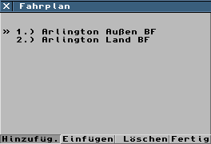

Zunächst muß das Fahrplanfenster aufgerufen werden, dies
geschieht durch einen Klick auf "Fahrplan". Dieser
Schalter befindet sich in den "Depot-Fenstern" sowie
den Informationsfenstern der einzelnen Fahrzeuge.
Durch einen Klick auf "Hinzufügen" erscheint unter dem
Mauscursor ein kleines "Halt-Schild", man kann nun neue
Haltestellen in die Liste durch einen einfachen Klick auf die gewünschten
Zielbahnhof/-haltestelle/-hafen. Im Fahrplanfenster wird durch
einen kleinen Pfeil (">>") angezeigt, welche
Haltestelle die nächste ist. Man kann nun einen Zielort durch
anklicken anwählen, das Fahrzeug wird nun zu dieser Haltestelle
fahren. Wenn ein Fahrzeug eine Haltestelle erreicht hat, wird
automatisch die nächste Haltestelle als Ziel angewählt.
Der Schalter "Einfügen" funktioniert ähnlich dem
"Hinzufügen", außer daß neue Haltestellen nicht ans
Ende angefügt, sondern vor die angewählt Haltestelle eingefügt
werden.
Nach dem Anwählen von "Löschen" können durch einen
Mausklick einzelne Zielorte aus der Liste entfernt werden.
Ein Klick auf "Fertig" schließt das Fenster. Die Änderungen
am Fahrplan haben nun Wirkung.
Von Henrik Wolff
eMail@Henrik-Wolff.de